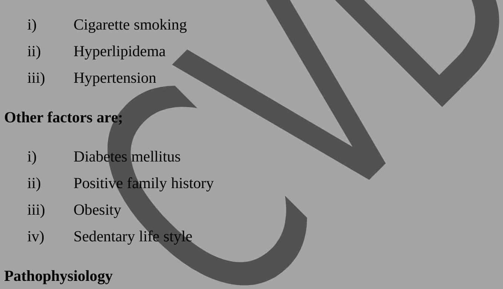
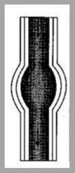
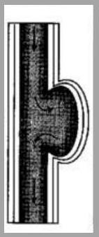

Arterial Diseases: Arteriosclerosis & Aneurysms
Arteriosclerosis
Def: Is the hardening and thickening of the walls of the smaller arteries. Peripheral chronic arterial occlusive disease involves progressive narrowing and eventual obstruction of the arteries to the extremities occurring predominantly on the legs. Others areas where it may occur may affect the aorta: iliac removal artery; popliteal; tibial or any combination of these areas.
Incidence: Usually occurs in the $6^{\text {th }}$ and $8^{\text {th }}$ decades of life. Affects primarily men and has a family tendency (genetic).
Predisposing Factors
There are three most significant factors which are risk for peripheral arterial disease i.e.
Chronic arterial obstruction leads to progressively inadequate oxygenation of the tissues supplied by the obstructed arteries. The pain attributable to Ischaemia is produced by the end products of anaerobic cellular metabolism such as lactic acid. This usually occurs in the larger muscle groups of the legs during exercise. Once the p+ stops exercising, the metabolites are cleared and the pain subsides. But as the disease advances in progress, the pain develops even at rest. This finding indicates insufficient blood flow to the skin and subcutaneous tissues. The p+ may notice resting foot pain more often at right and a chief partial relieve by lowering the limb below heart level.
Clinical Manifestations
The severity of clinical manifestations depends on the site and extent of occlusion as well as the adequacy of collateral circulation. The classic symptom of peripheral arterial disease is intermittent claudication defined as Ischaemic muscle pain that is precipitated by a predictable amount of exercise and relieved by resting. For example;
- Occlusive disease of the aortha iliac arteries may cause claudication in the buttocks and upper part of the thighs.
- Disease involving the removal or popliteal arteries may cause claudication in the cuff.
- If disease extends into the external iliac arteries, impotence may result.
- If the disease becomes more severe, the limb will progress to ulceration and gangreneous necrosis (tissue dies and rot).
Parasthesia: Manifested as numbness or tingling occurring in the toes or feet as a result of nerve tissue ischaemia.
True Peripheral Neuropathy: As a result of progressive long standing arterial obstruction seen mainly in diabetics. It produces excruciating shooting (burning pain in the extremities). This gradually if ignored progresses to loss of both sensation and deep pain as a result of diminished perfusion to nerve tissue cells.
On physical examination the limb appears pallor or blanching due to inadequate blood flow. When the limb is allowed to hang in a dependent position, there is hyperemia (reduces of the skin) and a bluish or dusky appearance.
The skin: Becomes shinny and taut and there is loss of hair on lower legs.
On palpation: There may be diminished or absent pedal, popliteal or removal pulses.
Diagnosis
- History and physical examination including palpation of peripheral pulses.
- Oscillometry will be done to determine pulse volume to the amplitude of pulsation.
- Doppler ultrasound will be done to measure the verosity of the blood flow through the vessel.
- Angiography is used to delineate the location and extent of the disease process.
Management
There are two forms of management i.e.
- Therapeutic
- Surgical
a) Therapeutic Management/Conservative Management
Its objectives include:
- Protecting the extremity from trauma.
- Slowing the progression of arterial sclerosis.
- Decreasing vaso spasm.
- Preventing and controlling infection.
- Improving collateral circulation.
The client's risk factors should be assessed and proper intervention should begin regarding cessation of smoking; weight reduction if indicated and control of lipid disorders. Hypertension also needs to be properly managed. Slow progressive and physical activity should be encouraged to help develop collateral circulation. For example, the p+ should be out of bed at least four times a day; walk for 30 minutes twice a day as tolerated and stop if pain occurs but after a restbreak, the client should continue walking. Keep the foot of the bed in the reverse trendleburg position at $10^{0}$.
Soaking of the affected part and application of a topical antibiotic may be advised to treat or prevent infection. If ulceration is present, the affected foot should be kept clean and dry. Covering the foot with a dry sterile dressing helps to protect the extremity from trauma and avoid infection.
b) Surgical Management
Indications to this;
- When the symptoms of intermitted claudication becomes incapacitating.
- When ulceration or gangrene is severe enough to threaten the viability of the limb. The latter problem will likely progress unless arterial circulation can be restored.
Various surgical approaches can be used to improve arterial blood flow beyond stenotic or occluded artery i.e.
- Bypass operation (most common): with autogenous vein or synthetic graft material to carry/bypass blood around the lesion.
- The other surgical option include: Endarterectomy which means opening the artery and removing the obstructing plug.
And patch graft angioplasty: Means opening the artery; removing the plug; sewing a patch to the artery opening to widen the lumen.
- For clients who are not suitable candidates for extensive surgery or in whom the surgical option are impossible, the blood flow to the peripherally may be increased through surgical interruption of the sympathetic nerves supplying the blood vessel of the affected limb. Rationale: Stimulation of the sympathetic nervous system results in constriction of the blood vessel. So sympatectomy prevents this vaso constriction hence causing permanent dilatation.
- Amputation: Is the last surgical intervention, but it may be required if gangrene is extensive; infection is present in the bone (osteomyelitis); and or major arteries in the limb are occluded precluding the possibility of bypass surgery.
NB: Every effort is made to preserve as much of the limb as possible so that the potential for rehabilitation with orthotic shoes or prosthesis is optimized.
Pharmacological Management
- Although various drugs are commonly prescribed to treat peripheral arteriosclerosis disease, no specific agent is known to be effective especially pentoxifylline (Trental) which increase crythrocyte flexibility and reduces blood viscosity thus improving the supply of oxygenatal blood to ischaemic muscle.
- Although it is not conclusive that anticoagulants and antiplatelet aggregating agents i.e. aspirin improves circulation through diseased arteries, they are sometimes used after arterial bypass surgery to promote graft patency.
Nutritional Management Consideration
If the client has evidence of arteriosclerosis, the following should be encouraged:
- Caloric adjustment so that optimum weight can be achieved.
- Decrease of dietry cholestral to less than 300 mg per day.
- Substantial reduction in sasturated dietry fat.
- Restriction of sodium to 2 g per day if oedema is present.
Nursing Management
The client needs to be assessed and nursing diagnosis made. The nursing diagnoses are determined when the problems and aetiological factors are supported by clinical data. Nursing diagnosis related to chronic arteriosclerosis occlusive disease may include:
- Altered tissue perfusion related to decreased arterial blood flow
- Impaired skin integrity related to decreased peripheral circulation; altered sensation and increased susceptibility to infection.
- Pain related to ischaemia and exercise.
- Activity intolerance related to imbalance to oxygen supply and demand.
- High risk for injury related to decreased sensation and tissue hypoxia.
- Anticipatory grieving related potential loss of the disease part.
Nursing Intervention
- Health Promotion and Maintenance: The client should be assessed for risk factors and be taught how to control them. The nursing role in client education in the p+ care facility is important in identifying high risk clients. For example, the nurse should also be involved at the community level such as in screening clinic for hypertension; youth education on hazards of cigarette smoking; assisting families in diet modification to reduce the intake of animal fat and refined sugars; proper care of the feet and the avoidance of injuries to the extremities.
Clients with positive family history of cardiac; diabetes or vascular disease need to be encouraged to obtain regular follow-up care.
Acute Intervention: This is after surgical intervention where the p+ is placed in ICU or recovery area for close observation to be taken.
Observations taken
- The operative extremity should be checked every 15 minutes. Initially and then hourly for colour; temperature; capillary refill and palpate for the presence of peripheral pulses distal to the operative site. These findings should be compared with the events preoperative baseline and with findings in the opposite limb.
- Other vital observations are taken. When the client is transferred from ICU or recovery room, nursing care should focus on continued circulatory assessment and monitoring for the development of potential complications.
Symptoms such as recurrent of severe ischaemic pain; loss of pulse or pulses; numbness or tingling and or cold temperature change may indicate occlusion on the bypass graft and should be reported to the surgeon immediately. On the $2^{\text {nd }}$ or $3^{\text {rd }}$ post operative day the p+ should be out off bed 3 to 4 times daily; sitting for prolonged period of time may be discouraged because leg dependency promotes oedema and depending on the location of the bypass may impede flow through the graft. Sitting is only limited to meal time and bathroom privileges only other time the pts should be lying. If oedema develops the leg should be elevated above heart level. If no complications are present discharge from the hospital can be anticipated 7-10 days post operatively.
Chronic/Subsequent Management
Arteriosclerosis is not localized to the lower extremities but is a systemic disease process. The overall approach in the control of arteriosclerosis involves: management of risk factors. This is by:
- Tobacco in any form is totally contra-indicated not only because of the vaso constrictive effects of ricotine but also because tobacco smoke impaires transport and cellular utilization of oxygen and increases blood viscosity.
- The client be given health education on the right diet; programmed exercises mediculous foot care; to improve collateral circulation through the exercises. The client should be taught to avoid injuries to extremities for skin colouir; scsaps; motting or treshions in the texture of the skin or subcutaneous fat or reduction of skin or hair growth. Any ulceration or inflammation be reported to the health care provider. Skin temperature be noted and capillary refill of the fingers and toes be tested. They should be advised to avoid prolonged standing or sitting. Measures to avoid compromising circulation should be implemented including tight bands or socks; tight nylon gathers; tight waist bands; shops should not be taled tightly and new shoes should be worn gradually.
Complications of Arteriosclerosis
- Chronic peripheral arterio disease progresses slowly and prolonged ischaemia leads to citrophy on the skin and underlying structures.
- Because of decreased ability to heal infections and necrosis may result from trauma to the feet.
- The ischaemic ulcers caused by arterio-insufficiency most commonly occurs over bony prominences on the toes and feet.
- If severe ischaemia persist gangrene will develop.
ANEURISMS
Def: These are out pouching or dilatation of the arterial wall and are common problems involving the aorta.
Incidence: They occur in men more often than women and the incidence increases with age. They are seen more often in patients who are 70 to 80 years old and are considered uncommon before age of 50 years.
Pathophysiology
- The most common cause of aortic aneurisms is arteriosclerosis; plaques composed of lipids, cholestral and fibrin and other debris adhere along and beneath the intima.
- Plaque formation cause degenerative causes in the media leading to the loss of elasticity, weakening and eventual dilatation of the aorta. As this condition.
- Occur the pulsatile flow of the blood places added stress on the already weakened vessel and causes it to increase in the size. The growth rate of;
- Aneurisms is unpredictable but the larger the aneurism the greater
- The risk of rupture. Arteriosclerosis can affect the entire length of the aorta, however most aneurisms related to arteriosclerosis are found in the abdominal aorta below the level of the renal arteries.
Causes of Aneurism
- Arteriosclerosis (the major cause)
- Syphilis
- Infections like TB bacterial endocarditis
- Conginetal disorders such as coarctation of the aorta and trauma
Classification of Aneurisms
They are classified into 2 basic classifications;
- True
- False
I. True Aneurism: Is one in which the wall of the artery forms the aneurism with at least one vessel layer still intact. This type is most commonly caused by arteriosclerosis. $3/4$ occurs in the abdomen and $1/4$ in the thoracic aorta. Popliteal artery aneurisms rank $3{ }^{\text {rd }}$ in frequency. True aneurism is further sub-divided into:
- Fusiform dilation
- Saccular dilatation
A. Fusiform Aneurism: It is circumferential and relatively uniform in shape.
B. Saccular Aneurism: It is potch like and has a narrow neck connecting the bulge to one side of the arterial wall.
II. False/Pseudo Aneurism: It is not an aneurism but a disruption of all layers of the arterial wall resulting in a leak of blood that is contained or tamponaded by surrounding structures. False aneurisms may result from trauma infection or a disruption of an arterial suture line after a bypass surgery.
The false aneurism may also result from arterial leakage after removal of arterial cannula such as upper stremity arterial catheters and intra-aortic balloon pump devides.
Clinical Manifestations
These are varied depending on the site of the aneurism. Thoracic aneurisms are usually asymptomatic.
- Deep diffuse chest pain.
- Aneurism located in the ascending aorta at the arch can produce hoarseness in the client as a result of pressure on the recurrent laryngeal nerve.
- Pressure on the oesophagus can cause dysphagia (difficult in swallowing).
- If the aneurism presses on the superior vena cava it can cause distended neck vein and oedema of the head and arm.
- Pressure of aneurism on pulmonary structures can lead to coughing; dysponea and airway destruction.
Management
i) Diagnostic studies
Most aneurisms are found on routine physical or x-ray examination i.e.
- Chest x-ray films are useful in demonstrating the mediasternal silhouette and any abnormal widening of the thoracic aorta.
- A plane abdominal film may show calcification within the wall of an abdominal aortic aneurism.
- When ECG is performed, it is used to rule out evidence of myocardial infarction.
- Echo cardiograph assists in the diagnosis or aortic insufficiency related to the ascending dilation.
Other examinations are: Computerized thomography, aortograph and ultra sanography.
Therapeutic Management (Medical Management)
The goal of therapeutic management is:
To prevent rupture of the aneurism: Therefore early detection and prompt reaction of the client are implative. Once an aneurism is suspected studies are performed to determine its exact size and location. A careful review of all body systems is necessary to identify any co-existing disorders. The carotid and coronary arteries should be assessed for an arteriosclerosis disease indication if obstructions in these vessels are present: they may need to be corrected be the aneurism is repaired.
The only effective reaction for an aortic aneurism is surgery. Surgical repair of fusiform aneurism is known as Endoaneurysmorrhaphy. The technique involves incising the diseased segement of the aorta; removing an intra luminal plug inserting a synthetic graft like Dacron or polytetrafludethylene) which is sutured to the normal aorta proximal and distal to the aneurism and then suturing the native aortic wall around the graft. If the iliac arteries are also aneurismal, the entire diseased segment is replaced by a bifurcation graft.
Nursing Management
Health Promotion and Maintenance
The client with aneurism may have a variety of manifestations or may be totally free of symptoms. Therefore, the nurse must use assessment skills to focus on early detection and reaction (proper history taking and physical examination). Client should be urged to receive regular routine physical examination and should be reminded that any symptom no matter how minor must be investigated if it persists. Nurses need to encourage persons with venereal diseases and their contacts to obtain appropriate therapeutic intervention in the course of disease and their contacts to obtain appropriate therapeutic intervention in the course of disease progress. Nurses must be aware of cardiovascular disease factors which are risk and be alert for opportunities to teach health measures to clients in the hospital and the community. Trauma victims should be urged to seek medical attention even in the absence of symptoms.
Pre-Operative Care
The nursing role during the pre-operative period should include:
- Teaching.
- Providing support for their clients and families.
- And careful assessing all body systems.
A thorough nursing history and assessment should be performed because most aneurisms are arterosclerotic and arterosclerosis is a systematic disease process it is likely that the disease process is present throughout the body. Therefore, it is important the nurse to watch for signs:
- Of cardiac, pulmonary; cerebral and peripheral vascular problems.
- Clients should also be monitored for signs of ruptured aneurisms.
- Establishing a data baseline is important for later post-operative assessment and intervention. In addition to gathering data: the nurse should;
- Observe the client for subtle abnormality. Special attention should be paid to the quality and character of peripheral pulses; the voice and neurological status. Arterial pulse sites in the lower extremities should be checked and marked before surgery.
Post-Operative Care
In addition to maintaining adequate respiratory function; fluid and electrolyte balance and pain control, the nurse needs to monitor graft patency; renal perfusion and circulation. The nurse can also assist in preventing ventricular arrhythmias; infections and neurological complications.
A. Graft Patency
Patency of an aortic graft can be assured with maintenance of adequate;
- Systematic blood pressure. Prolonged hypotension may result to thrombosis of the graft as a result of decreased blood flow. Hypovolmia can be avoided by administration of IV fluids and blood components as indicated.
- Central veneous pressure readings should be monitored hourly to help.
- Assess the client's state of hydration. Marked hypertension may cause undue stress on the promixal and distal arterial anastemosis resulting in leakage of blood or rupture at the suture line. Pharmacological interventions with diuretics or antihypensive agents may be indicated of severe hypertension persist.
B. Ventricular Disrrthymias
Are usually caused by hypoxia; hypothermia or unrecognized electrolyte imbalance clients with coexisting coronary artery arteriosclerosis are prone to disrrthymias.
Nursing Interventions
- Do cardiac monitoring and the result of electrolyte studies and arterial.
- Blood gases determinations. Persons who return from surgery with
- Hyporthermia should be placed with hyperthermia blankets urinary output should be monitored carefully.
C. Infection
The development of a prostectic vascular graft infection can be a life threatening infection. Nursing intervention to prevent infection should include;
- Ensuring that the patient receives a broad spectrum antibiotic as prescribed to maintain adequate blood levels of the drug. It is important;
- To assess body temperature regularly and reporting any elevation. Laboratory data;
- Should also be monitored because arising wide blood cell count may be the first indication of an infection.
- The nurse should ensure adequate nutrition; monitoring serum albumin levels to ensure proper wound healing; signs of infection or any unusual drainage.
- Aseptic technique should be maintained when handling any catheters or drainages because they are frequently a portal of entry for bacteria.
- Meticulous perineal care for clients with indwelling catheter for urine is also essential to minimize incidences of urinary tract infections.
- Operation site should be kept clean and dry.
D. Gastro Intestinal Status
After abdominal aneurism resection paralytic ideals may develop as a result of the incinual manipulation and displacement of the bowel for long periods of the surgery. The intestines may become swollen and bruised and peristalsis ceases for variable intervals.
An NGT is inserted and connected to allow intermittent suction. This decompresses the stomach and duodenum and prevents aspiration of the stomach contents and decreases pressure on the suture lines.
The nurse's Responsibility
- The NGT should be irrigated with N/saline solution as needed and the amount.
- Character of the drainage should be recorded.
- The nurse should ausculted for the return of bowel sounds.
- The passing of fluters can also be a sign of returning bowel functioning and should be reported.
- If the arterial blood supply to the bowel is disrupted during the surgery, ischaemia or death of the intestinal tissue may result. This is evidenced by lack of bowel sounds; fever; abdominal distension and diarrhea stools.
E. Neurological Status
The neurological complications may arise after procedures of surgical or the aorta especially when the ascending aorta and the arch are involved.
Nursing Interventions
- Hourly assessment of neurological signs i.e. level of consciousness pupil size and response to light; ability to move all extremities and quality of the hand grasp. These information should be recorded in detail;
- With careful description of the patient's response. Any function decreased from the baseline assessment should be reported to the doctor immediately.
F. Circulatory Status
The anatomical location of the aneurism indicates the areas of major concern related to the circulatory status. For the $1^{\text {st }} 24$ hours, peripheral pulses should be checked regularly every hour. Depending on where surgery was performed, pulses to be assessed includes the dorsals pedis; posterior tibial; popliteal; removal as well as the brachial; radial; carotid and termporal pulses. It is also important to note the temperature, colour and movement of the extremities.
G. Renal Perfusion
- One of the causes of decreased renal perfusion is the possible dislodgement of a fragment of debris from the aorta that subsequently lodges in one or more renal arteries. This causes obstruction and ischaemia of one or both kidneys.
- Hypotension, poor hydration, prolonged aortic clamping or blood loss can also lead to decreased renal perfusion. Therefore, an accurate record of fluid intake and urine output should be kept until the patient resumes the pre-operative diet. If hourly urine output drops below 30 mls per hour for 2 consecutive hours, the doctor should be notified immediately. Central veneous pressure readings also give important information regarding hydration.
There should be daily blood urea nitrogen (BUN) and serum creatinine studies to evaluate renal function.
Chronic/Subsequent Management
Psychological Support
Clients may be apprehensive about returning home after major surgery involving the aorta .They should be encouraged to express their concerns and be reassured that they can return to activities of normal living. They are taught to observe changes in color or warmth of the extremities. They can also be taught to take peripheral pulses.
Complications of Aneurism
- Rupture of the aneurism: If rupture occurs posteriorly into the lateral peritorial space bleeding may be tamponaded by surround structures preventing leakage. In this case, the patient has severe back pain clo and may have back or flunk ecchymosis (turnar’s sign).
If rupture occurs anteriorly into the abdominal cavity death from massive haemorrhage is likely. If the client does reach the hospital presenting signs are manifestations or shock such as tarchcardia, hypotension, pale clummy skin, decreased urinary output, altered sensorium as well as abdominal tenderness.
- Paraplegia: Occurs if the blood supply to the spinal cord is severely compromised as a result of rupture, prolonged hypertension or prolonged clump time during surgery.
- Pressure
- Thrombosis
- Stroke
- Lower extremity ischaemia.